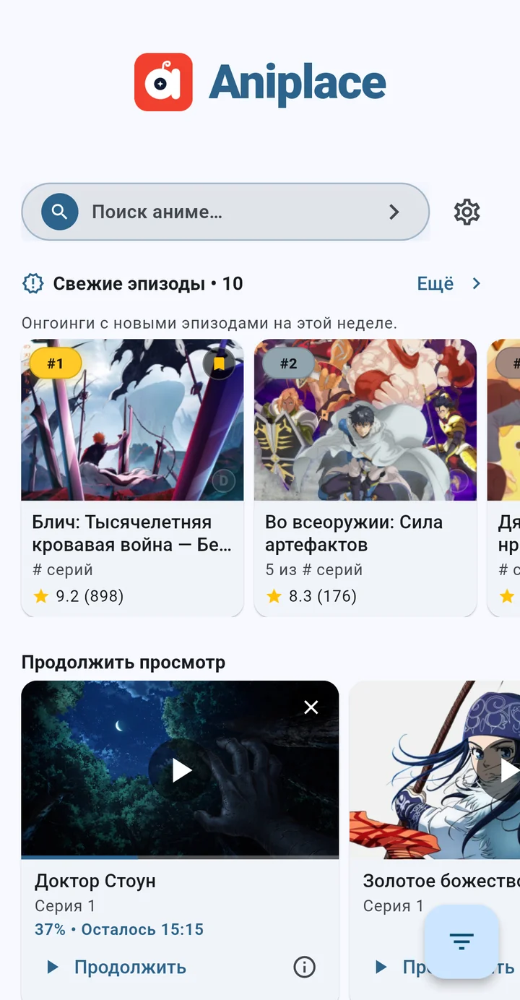
Каталог
Каталог, который знает сезон
24 000+ тайтлов и дунхуа, поиск по названию, жанры и подборки. Новинки и онгоинги — сразу на главной.
Бесплатно · без аккаунта · Android
Каталог аниме и дунхуа, расписание новинок, поиск и фильтры, списки и коллекции — в одном приложении. 24 000+ тайтлов, синхронизация между устройствами, светлая и тёмная темы.
APK подписан · как установить · Windows — опционально
Для iPhone и iPad версии нет — Aniplace работает на Android и Windows.
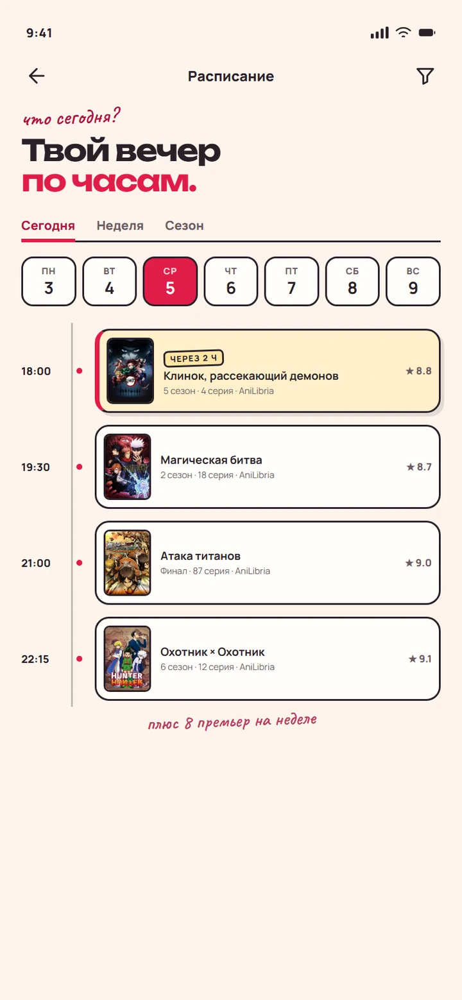
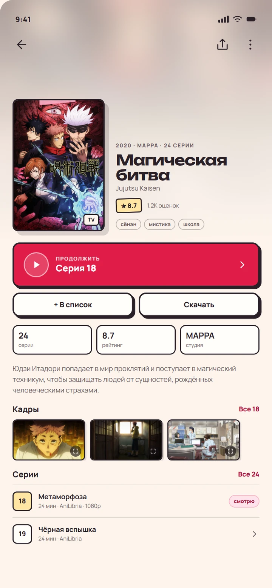
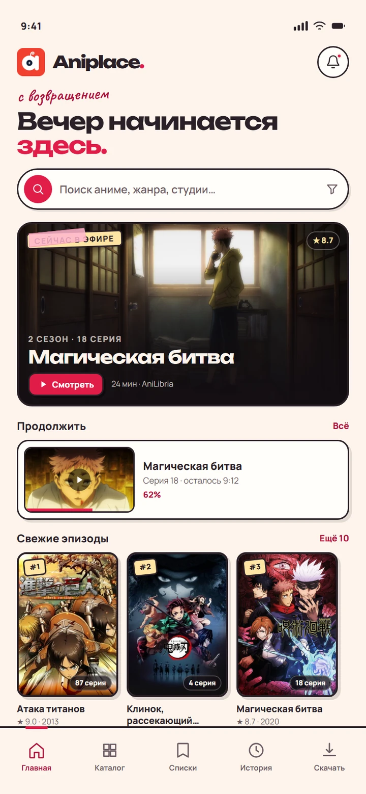
всё в одном месте
Aniplace собирает каталог, расписание новинок, поиск и фильтры и твои списки в одно спокойное приложение — без вкладок, аккаунтов и лишних движений.

24 000+ тайтлов и дунхуа, поиск по названию, жанры и подборки. Новинки и онгоинги — сразу на главной.
Что выходит сегодня — и ничего не пропускай из своих онгоингов.
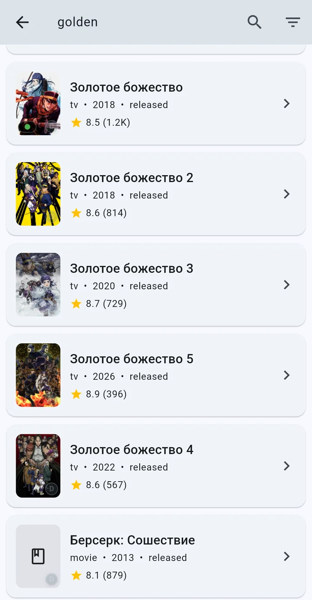
Название, жанры и подборки: поиск и фильтры по 24 000+ тайтлам каталога.
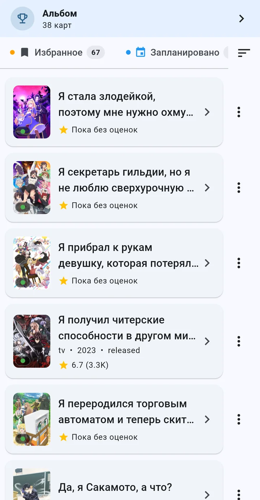
«В планах», «Собранное», избранное и история — всё всегда под рукой.
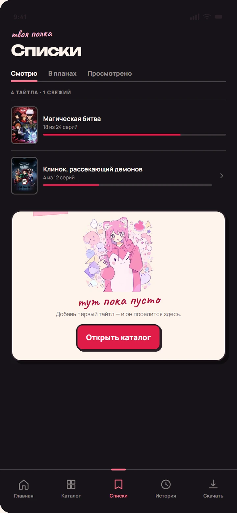
Списки и коллекции переносятся между твоими устройствами по Wi-Fi — напрямую, без облака и аккаунта.
новый интерфейс
Шесть макетов нового интерфейса Aniplace. Нажми на любой, чтобы увеличить.
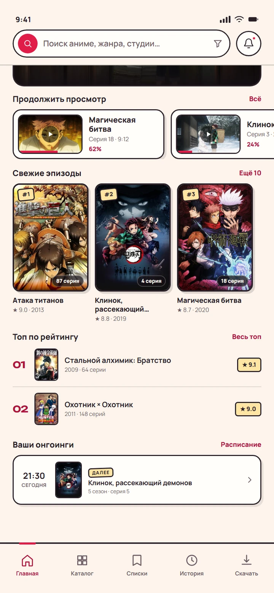
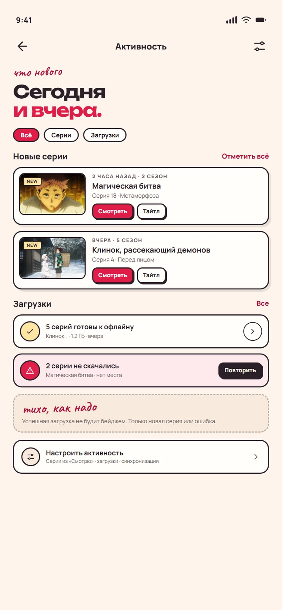
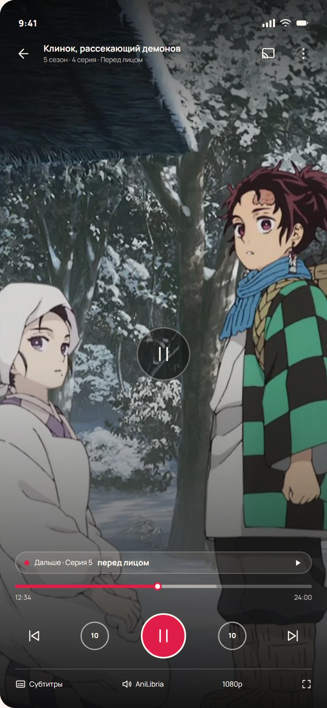
Макеты нового интерфейса Aniplace из дизайн-концепта: светлая и тёмная темы, реальные постеры.
одна минута
Скачай APK напрямую или открой Aniplace в RuStore. Android спросит разрешение один раз — это стандартное подтверждение. На компьютере — QR-код на Android ниже.
Нажми кнопку — файл около 45 МБ начнёт скачиваться напрямую с GitHub.
Android один раз спросит разрешение для браузера. Нажми «Установить» — и всё.
Каталог уже внутри. Обновления Aniplace проверяет сам — возвращаться на сайт не нужно.
APK подписан. Контрольная SHA-256 лежит в релизе — сверь, если хочешь убедиться, что файл не подменили.
Скачай установщик с GitHub и запусти. Windows один раз покажет SmartScreen — стандартное предупреждение для новой сборки.
Скачать для Windowsустановщик · опциональноНажми кнопку — установщик около 32 МБ скачается напрямую с GitHub.
Открой скачанный файл и следуй подсказкам мастера установки.
SmartScreen: «Подробнее» → «Выполнить в любом случае». Это обычное предупреждение для новой сборки.
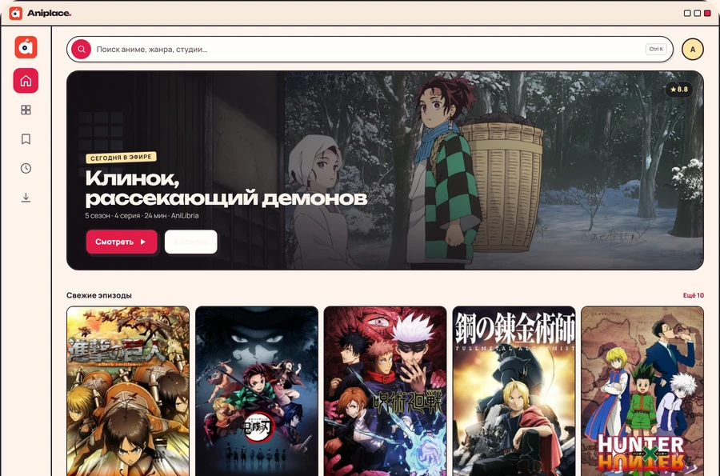
коротко
Да. Ни подписок, ни покупок — все функции доступны сразу. В версии из RuStore показывается реклама; персонализацию можно отключить в настройках Android.
Нет. Списки, история и настройки хранятся на устройстве. Синхронизация идёт напрямую между твоими устройствами по Wi-Fi — без облака.
Aniplace распространяется напрямую и публикуется в RuStore, чтобы обновления выходили быстрее. Прямая сборка — та же, что в магазине.
APK подписан, SHA-256 опубликован в релизе на GitHub. Сверь контрольную сумму, если хочешь убедиться, что файл не подменили.
Android 7.0+ и Windows 10/11. Версий для iPhone, iPad и Linux нет.
Каталог аниме и дунхуа, расписание новинок, поиск и фильтры, списки и коллекции, история и синхронизация между устройствами.
до новых встреч
Твой следующий сезон уже в каталоге. Скачай Aniplace — это бесплатно и без аккаунта.